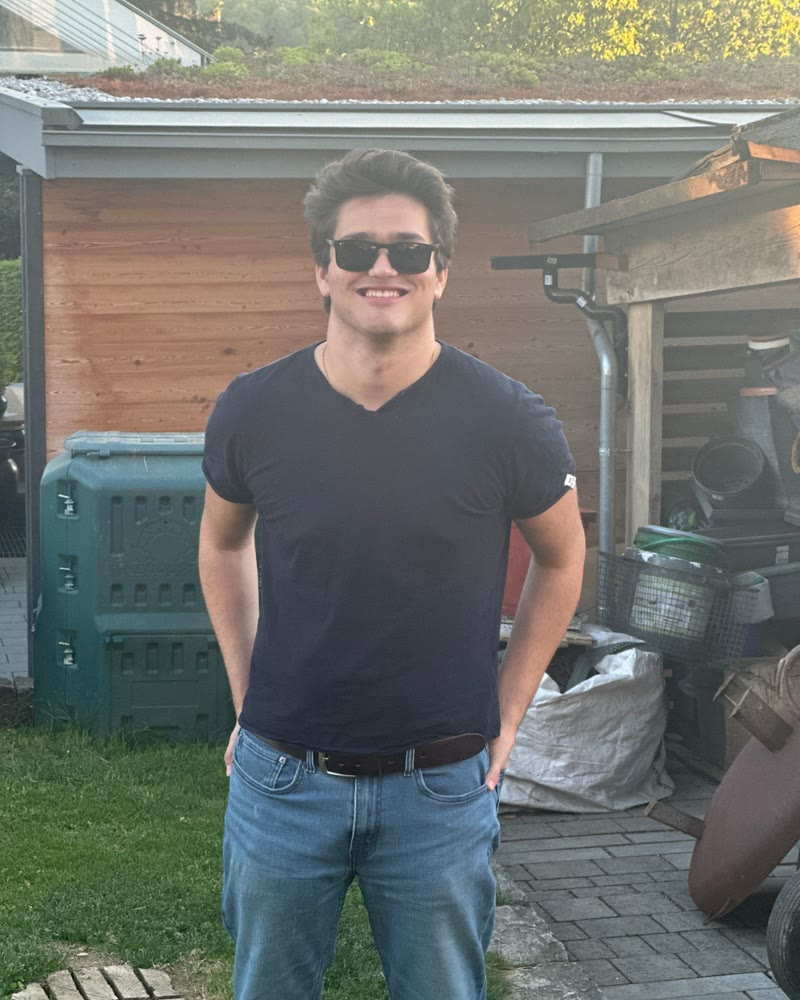

Leistungen, die Anfragen bringen.
Social Media Betreuung
Skript, Dreh vor Ort, Schnitt und Posten. 10 bis 15 Reels im Monat aus einem halben Drehtag.
Reels planenSEO
Damit Ihr Betrieb bei Google oben steht, wenn jemand in der Nähe sucht.
Gefunden werdenPaid Ads
Anzeigen auf Instagram, TikTok und Google. Gemessen an Anfragen, nicht an Klicks.
Anzeigen schaltenKanalbetreuung
Kommentare, Nachrichten und Bewertungen werden jeden Werktag beantwortet.
Antworten lassenSEO Audit
Die Bestandsaufnahme: was Ihre Website bremst und was zuerst zu tun ist.
Audit anfragenWebdesign
Technik, Seitenstruktur und eine Website, die zu Ihren Videos passt.
Website planenRaw vs Edited
Links die Aufnahme, wie sie aus der Kamera kommt. Rechts dieselbe Stelle nach dem Schnitt. Ziehen Sie den Regler.
Mythen über Permanent Make-upPearlHouse
Der Zucker-TrendMasson Beauty
Fakt oder Mythos: WimpernPearlHouse
Reels aus der Region.
Antippen zum Ansehen. Alles selbst geschrieben, gedreht und geschnitten.
Vom Skript zum Reel.
So entsteht jedes Video. Einfach weiterscrollen.
Skript
Ich schreibe jedes Video vorher aus, mit Hook in der ersten Sekunde. Sie lesen es einmal und sprechen frei.
„Drei Dinge, die du vor deinem ersten Termin wissen solltest"
Nummer eins hört fast niemand gern: Komm nicht frisch rasiert. Die Haare brauchen ein paar Millimeter, sonst greift die Behandlung nicht. Nummer zwei …
Hook in Sekunde 1Dreh
Ein halber Tag in Ihrem Betrieb. Eine Kamera und ein Mikrofon, kein Filmteam. Ihre Kunden merken kaum, dass gedreht wird.
Schnitt
Untertitel, Zooms, Musik und Ihr Logo. Jedes Video im Look Ihres Betriebs, nicht aus einer Vorlage.
Posten
Nach Plan auf Instagram und TikTok. Die Zahlen sehen Sie in Ihrem eigenen Konto, Sie müssen mir nichts glauben.
Wo Ihre Videos laufen.
Ein Dreh, ein Video, mehrere Kanäle. Jedes Format passend zugeschnitten.
Reels und Stories für die Kundschaft aus der Umgebung.
TikTok
Mehr Reichweite bei Jüngeren, dasselbe Video.
YouTube Shorts
Wird gesucht und bleibt lange auffindbar.
Die ältere Stammkundschaft erreicht man noch hier.
Google Profil
Videos und Fotos direkt dort, wo Kunden Sie finden.
Kontor
das; Substantiv, Plural: Kontore
Früher: das Büro, in dem Kaufleute ihre Geschäfte geführt haben.
Heute: der Teil Ihres Marketings, für den im Tagesgeschäft keine Zeit bleibt.

Alejandro ArndtSkript, Dreh und Schnitt


Lernen wir uns kennen.
Erzählen Sie kurz, was Sie vorhaben. Ich melde mich innerhalb von zwei Werktagen per E-Mail oder Telefon, und wir sprechen 15 Minuten über Ihren Betrieb.
Social Media Betreuung für lokale Betriebe
Kontor betreut Social Media für Betriebe, die ihre Arbeit zeigen können: Studios, Praxen, Handwerk, Gastronomie und Dienstleister mit festem Einzugsgebiet. Der Schwerpunkt liegt auf Kurzvideos, also Reels und TikToks, weil diese Formate auch Menschen erreichen, die dem Profil noch nicht folgen.
Der Ablauf ist bewusst einfach. Ich schreibe die Skripte, drehe einen halben Tag in Ihrem Betrieb, schneide daraus fertige Videos und veröffentliche sie nach Plan. Was an Schnitt, Untertiteln und Bewegtgrafik dazugehört, steht unter Social Media Betreuung.
Der häufigste Grund, warum Betriebe mit Social Media aufhören, ist nicht die fehlende Idee, sondern die Zeit für den Schnitt. Deshalb liegt dieser Teil komplett bei mir.
Suchmaschinenoptimierung und Anzeigen ergänzen die Videos, für Betriebe, die zusätzlich über Google gefunden werden wollen. Mehr dazu unter SEO und Paid Ads. Fragen aus der Praxis beantwortet der Blog.